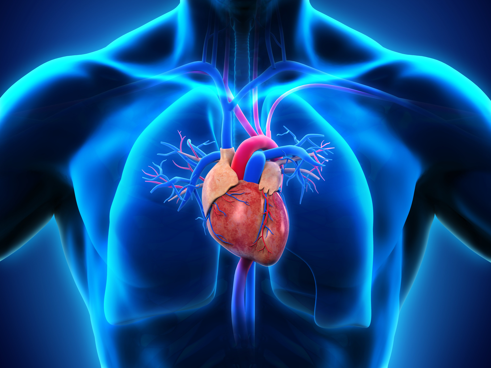

Classification of Heart Treatment
Surgery

Coronary artery bypass surgery: This allows blood flow to reach a part of the heart when an artery is blocked. Coronary artery bypass grafting is the most common surgery. A surgeon can use a healthy blood vessel from another part of the body to repair a blocked one.
Valve replacement or repair: A surgeon can replace or repair a valve that is not functioning properly.
Wait. But there are more of it:
Repair surgery: A surgeon can repair congenital heart defects, aneurysms, and other problems.
Device implantation: Pacemakers, balloon catheters, and other devices can help regulate the heartbeat and support blood flow.
Laser treatment: Transmyocardial laser revascularization can help treat angina.
To learn more about the heart surgery you can check here heart surgery